주장 C
저자가 무엇을 가능하게 했다고 말하는가?
예: 이 구조가 대규모 이미지 분류에 유효하다.
각 90분 · 2주 · 개념과 시각적 사고를 위한 68페이지
1주차: MNIST로 분류 이해하기 · 2주차: AlexNet으로 논문 읽기
무엇을 맞히는 문제인지 정하고, 사람의 단서를 CNN의 계산으로 연결한다.
CNN ① · 이미지 분류와 객체 인식
사람의 관찰 → 기초 용어 → 실제 MNIST
90분 · 설명, 관찰, 예측, 토론
과제의 이름을 구분한 뒤, 직관과 계산을 잇고, 실제 숫자로 확인한다.
01 문제 구분 이미지 분류·객체 인식·검출·분할은 출력이 어떻게 다른가?
02 사람의 단서 모양·부분의 관계·경험·맥락은 판단에 어떻게 관여할까?
03 계산 언어 → 04 MNIST 필터·특징 맵·채널·학습을 익히고 실제 손글씨에서 확인한다.
코딩 실습은 별도 선택 확장입니다. 이 시간표는 개념 수업만으로 90분을 구성합니다.
과제 15 + 사람 15 + 기초 용어 30 + MNIST 25 + 정리 5 = 90분.
객체 인식은 넓은 표현이다. 무엇을 출력하는지까지 말하면 과제가 분명해진다.
객체 인식 object recognition은 영상 속 대상을 알아보는 일을 넓게 부르는 말로 쓰인다. 문맥에 따라 분류를 가리키기도 하므로 뜻을 확인해야 한다.
이미지 분류 image classification는 이미지에 클래스 라벨을 붙이는 과제다. 오늘은 숫자 한 장을 0–9 중 하나로 고르는 단일 라벨 분류를 다룬다.
대상의 종류와 위치 상자를 함께 찾는 과제는 객체 검출 object detection이라고 구분하자.
“객체 인식 = 위치까지 찾기”로 단정하기보다, 분류·검출의 출력을 구체화한다.
종류만 말할지, 위치도 찾을지, 픽셀 경계까지 나눌지 결정한다.
분류 이미지나 잘라 낸 물체에 “컵” 같은 라벨을 붙인다. 일반적인 분류 출력에는 위치 상자가 없다.
검출 물체마다 “컵 / 병”과 위치 상자를 출력한다. 여러 물체가 있을 수 있다.
분할 픽셀마다 영역을 나눈다. 의미 분할은 클래스 영역, 인스턴스 분할은 같은 클래스의 개별 물체도 구분한다.
입력 사진이 같아도 정답의 형태가 다르면 다른 과제다.
손글씨 한 장을 받아 0부터 9까지 중 하나의 라벨을 고른다.
사진 속 여러 숫자의 위치를 찾거나 문장 전체를 읽는 OCR 파이프라인과는 범위가 다르다. 오늘은 한 글자씩 정리된 이미지의 분류에 집중한다.
분류기를 이해한 뒤에는 검출·분할에도 특징 추출의 아이디어를 연결할 수 있다. 다만 출력 구조와 학습 목표는 추가로 달라진다.
과제를 먼저 정해야 라벨·출력·평가가 정해진다.
획의 굵기와 기울기가 달라도 비슷한 구조를 읽을 수 있다.
가로획과 내려가는 획, 꺾이는 위치 같은 단서를 볼 수 있다. 모든 7이 같은 픽셀이나 같은 필체를 갖는 것은 아니다.
우리는 경험에서 배운 범주를 활용하고, 중요한 차이와 덜 중요한 차이를 구분한다. 하지만 한 가지 단서만으로 모든 손글씨를 완벽하게 설명할 수는 없다.
같은 범주는 하나의 완벽한 사진과 동일하다는 뜻이 아니다.
둥근 획 하나보다, 어디가 열렸고 무엇이 연결됐는지가 중요할 수 있다.
3과 8을 구분할 때 곡선이 있다는 사실만으로는 부족하다. 왼쪽이 열렸는지, 고리들이 어떻게 연결되는지를 살펴볼 수 있다.
작은 획 → 더 큰 부분 → 전체 형태라는 설명은 직관을 준다. 그렇다고 사람이나 CNN의 모든 처리가 반드시 이 순서의 이름표로 나뉜다는 뜻은 아니다.
단서의 존재와 단서 사이의 관계를 함께 생각한다.
같은 모양도 숫자 사이에서는 1, 글자 사이에서는 I로 읽을 수 있다.
인간은 주변 문맥과 경험을 함께 사용하며 애매한 입력을 해석할 수 있다. 시각 단서만으로 확신할 수 없는 경우도 있다.
이 수업의 작은 CNN은 정해진 크기의 이미지 한 장과 10개 후보를 다룬다. 사람의 경험·주의·반복 처리 전체를 복제하는 모델은 아니다.
사람의 직관은 비유의 출발점이고, CNN의 동작은 실제 연산으로 확인한다.
이름을 떠올리는 사람과 달리, 모델이 받는 입력은 위치별 숫자다.
픽셀은 디지털 이미지의 한 위치에 기록된 값이다. 흑백은 밝기 한 값, RGB는 색 채널 세 값을 사용할 수 있다.
입력은 이미지 배열, 라벨은 바깥에서 붙인 정답이다. 숫자 값들을 작은 단서의 표현으로 바꾸고 그 표현에서 라벨을 예측한다.
픽셀 안에 “7”이라는 의미가 들어 있는 것은 아니다.
비유를 먼저 붙이고, 바로 옆에 실제 계산을 놓는다.
“작은 부분에 던지는 질문” → 필터: 작은 가중치 묶음으로 주변 값을 곱하고 더한다.
“위치별 답을 모은 지도” → 특징 맵: 같은 필터의 반응을 위치별로 기록한다.
“여러 관점과 넓은 단서” → 채널·수용 영역: 표현의 축과 입력에 영향을 받는 범위다.
필터가 의식적으로 본다는 뜻은 아니다. 비유 뒤에 곱셈·합·배열·연결이 있다.
왼쪽 값을 빼고 오른쪽 값을 더하면 밝아지는 경계에 반응한다.
필터 / kernel은 작은 가중치 배열이다. 입력 패치와 같은 위치끼리 곱한 뒤 더하면 출력 한 칸이 된다.
이 예에서는 각 행이 [0,0,1], 필터가 [−1,0,1]이므로 한 행에서 1, 세 행에서 3이 나온다. 아직 클래스 확률이 아닌 중간 반응이다.
합성곱 층은 같은 지역 계산을 위치마다 반복한다.
같은 필터를 옮겨 가며 적용하면, 어디에서 반응했는지도 남는다.
비유하면 같은 질문을 이미지의 각 위치에 던져 답을 지도에 적는 것이다. 필터는 그대로이고 입력 패치가 달라진다.
평평한 밝은 곳과 경계는 다른 반응을 만들 수 있다. 밝은 특징 맵이 모든 의미에서 중요한 위치나 정답의 근거라는 보장은 없다.
PDF는 고정된 첫 위치를 보여 주며, 웹에서는 필터를 직접 이동할 수 있다.
가로획을 보는 관점과 세로획을 보는 관점이 같은 위치에 함께 있을 수 있다.
필터 여러 개는 출력 특징 맵 여러 장을 만든다. 입력 RGB 채널과 출력 특징 채널은 역할이 다르다.
출력 채널 8개는 중간 반응 지도 8장이라는 뜻이다. 분류할 숫자가 8개라는 뜻도, 각각에 사람이 읽을 수 있는 이름이 붙는다는 뜻도 아니다.
채널 수는 중간 표현의 폭, 클래스 수는 최종 후보의 수다.
왼쪽의 가로획과 오른쪽의 가로획에 같은 기준을 적용한다.
비유하면 같은 관찰 기준을 종이 여러 곳에 재사용하는 것이다. 위치마다 다른 필터를 새로 만드는 구조가 아니다.
흑백 입력의 3×3 필터 16개에 bias를 하나씩 두면 16×(9+1)=160개 파라미터다. 출력 위치 수가 필터 수에 다시 곱해지지 않는다.
이미지에 유용한 반복 규칙을 구조에 넣는 대신, 위치별 자유도에는 제약을 준다.
무엇을 함께 볼지, 얼마나 건너뛸지, 가장자리를 어떻게 다룰지의 선택이다.
수용 영역은 특정 출력에 영향을 줄 수 있는 입력 범위다. 시야라는 비유와 연결하되 실제로는 연결 구조로 정해진다.
stride는 창을 옮기는 간격, padding은 가장자리에 추가하는 값이다. stride를 키우면 공간 위치를 더 성기게 계산한다.
3×3 필터·stride1에서 5×5 입력은 padding0이면 3×3, padding1이면 5×5 출력.
어떤 반응을 전달할지와 얼마나 자세한 위치를 남길지 정한다.
ReLU는 음수를 0으로 바꾸고 양수는 통과시킨다. “일부 반응만 넘기기”라는 비유가 가능하지만 실제로는 max(0,x) 연산이다.
max pooling은 작은 영역의 최댓값을 남긴다. “근처에 강한 단서가 있었나”를 요약하는 대신 정확한 위치와 다른 값은 잃는다.
비선형 변환은 조합의 표현력을, 공간 요약은 해상도와 정보 손실을 바꾼다.
앞의 반응 지도를 다시 조합하면 원래 입력의 더 넓은 범위를 다룰 수 있다.
stride1·dilation1의 3×3 합성곱을 이어 붙이면 이론적 수용 영역은 3×3 → 5×5 → 7×7로 넓어진다.
그 표현을 모아 분류기 classifier가 후보별 점수를 만든다. 가로획 하나가 곧 숫자 7은 아니며 여러 반응의 조합을 사용한다.
작은 질문을 연결해 넓은 관계를 계산한다. 층마다 정해진 인간식 의미가 있는 것은 아니다.
사람이 예시와 피드백으로 배운다는 직관을, 구체적인 수치 조정으로 연결한다.
logits는 클래스별 원점수, softmax는 합이1인 상대적 출력으로 바꾼 값이다. loss는 예측과 정답을 비교하는 학습 기준이다.
역전파로 가중치 변화에 대한 손실의 변화율을 계산하고, optimizer가 가중치를 수정한다. 눈·뇌의 실제 학습을 그대로 구현한 것은 아니다.
구조는 사람이 설계하고, 많은 필터 값은 라벨이 있는 예시로 조정한다.
입력 한 장에서 숫자 라벨까지, 방금 배운 용어를 같은 예제로 따라간다.
MNIST는 0–9 손글씨 숫자 이미지를 분류하는 대표적인 데이터셋이다. 이미지마다 하나의 정답 숫자가 붙어 있다.
배경과 크기가 정리된 작은 입력이므로 픽셀 → 필터 → 특징 → 점수 → 학습의 흐름을 관찰하기 좋다. 자연 사진 전체의 인식 능력을 대표하지는 않는다.
여기부터는 실제 MNIST 이미지와 실제로 실행한 작은 CNN 결과를 사용한다.
열은 라벨 0–9, 행은 서로 다른 실제 표본이다.
모두 28×28 흑백 이미지다. 같은 숫자라도 획의 굵기·기울기·연결 모양이 다르다. 사람의 분류에서 이야기한 단서와 변화가 다시 등장한다.
공식 분할은 train 60,000장 / test 10,000장이다. 이 수업의 작은 실험은 그중 일부를 별도로 선택한다.
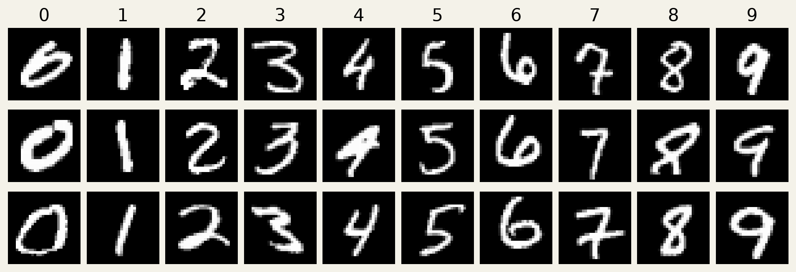
한 숫자의 표본들을 보며 유지되는 구조와 달라지는 모양을 구분해 보자.
사람이 7이라고 읽는 모양을 모델은 [1,28,28] 배열로 받는다.
그림의 작은 창을 확대하면 실제 밝기 값 0–255를 볼 수 있다. 실습에서는 255로 나누어 0–1 범위로 바꾼다.
숫자 라벨 7과 밝기 값 7은 역할이 다르다. 전자는 정답 범주이고 후자는 한 픽셀의 세기다. 배치로 묶으면 [B,1,28,28]이 된다.
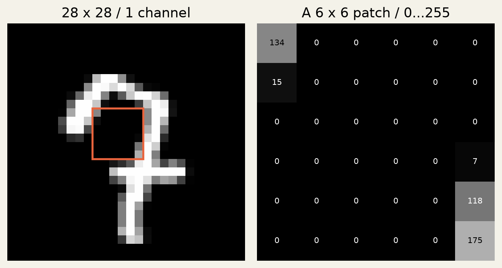
shape는 배열의 모양, label은 맞혀야 할 의미다.
수업용 실험의 예산을 정한 뒤, 마지막 test는 가중치 조정에 쓰지 않는다.
공식 train에서 클래스마다600장씩 학습6,000장, 서로 겹치지 않는100장씩 검증1,000장을 선택한다. 나머지53,000장은 이 실험에서 쓰지 않는다.
공식 test에서는 클래스마다100장씩 평가1,000장을 고정한다. seed17·6epoch·같은 작은 CNN으로 학습하고 마지막epoch를 평가한다.
뒤의 수치는 공식 test 10,000장 전체 성능이 아니라 고정한 1,000장 부분집합 결과다.
실제 손글씨 한 장에 좌우·상하 차이 필터를 적용했다.
왼쪽은 실제 입력, 가운데와 오른쪽은 사람이 정한 차이 필터의 계산 결과다. 색의 부호와 크기는 밝기 변화의 방향과 정도를 나타낸다.
이 단계에서 필터는 “7이다”라고 말하지 않는다. 중간 단서를 위치별로 기록한다. 실제 CNN의 학습된 필터가 이 두 규칙과 똑같아야 하는 것은 아니다.
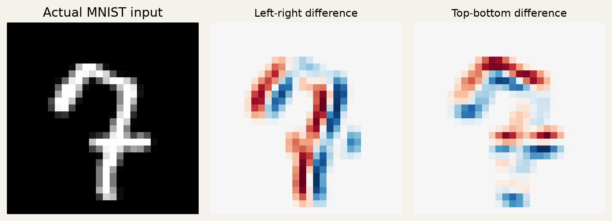
필터 반응 → 특징 맵이라는 용어를 실제 픽셀 변화에 연결한다.
흑백 입력 → 특징8장 → 특징16장 → 숫자 후보10개.
3×3 Conv·ReLU 뒤에 2×2 max pooling을 둔다. 공간 크기는 28×28 → 14×14 → 7×7로 줄어든다.
마지막 16×7×7 특징을 펼쳐 선형 분류기에 넣고 0–9의 점수10개를 만든다. 이 모델의 학습 파라미터는 9,098개다.
CNN 층은 특징을 만들고, 분류기는 그 표현을 숫자별 점수로 연결한다.
필터와 분류 가중치를 정답 숫자에 맞춰 함께 조정한 결과다.
실행 조건 CPU·seed17·Adam(lr0.003)·batch128·6epoch. 학습 CE는 1.322에서 0.116로 변했다.
왼쪽은 학습/검증 손실, 오른쪽은 검증 정확도다. 정확도는 정답 여부, 손실은 정답에 부여한 점수까지 반영하므로 같은 값이 아니다.
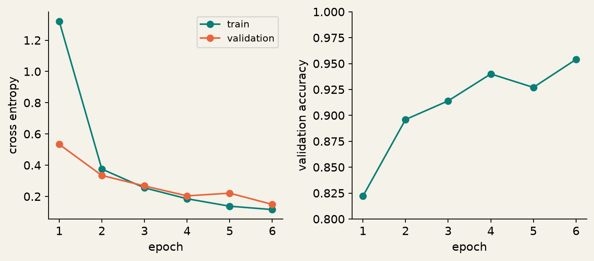
이 곡선은 실제 실행 결과다. 다른 초기값·환경·예산에서도 같은 수치가 보장되지는 않는다.
실제 test 표본 하나의 예측과 softmax 출력을 함께 본다.
이 모델은 고정 test 1,000장에서 95.3%를 맞혔다. 오른쪽 막대는 한 표본에서 후보 0–9에 준 softmax 값이다.
큰 막대가 예측 라벨을 정하지만, 그 값이 현실의 정답률과 언제나 일치하거나 낯선 입력을 잘 거른다는 뜻은 아니다. 사진 속 숫자 위치를 찾는 검출 결과도 아니다.
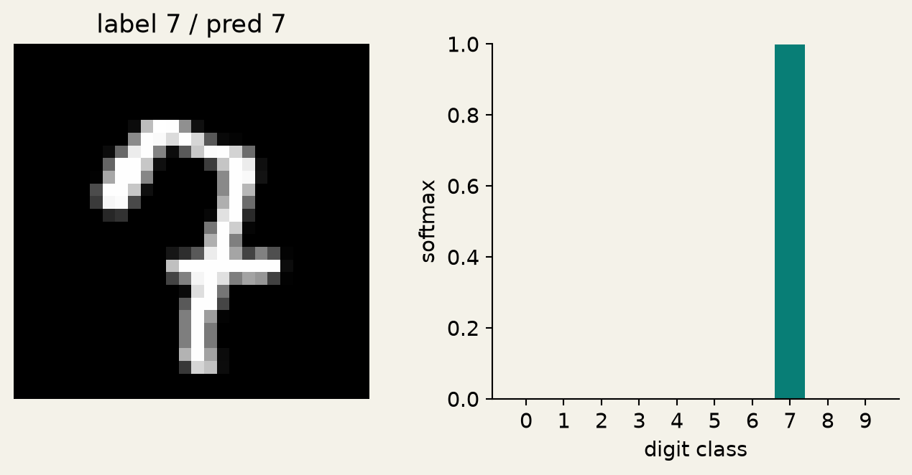
분류 출력은 후보별 점수와 라벨이다. 실제 위치 상자나 픽셀 마스크를 출력하지 않았다.
다음은 실제 test 오분류 중 앞의 여섯 장이다. 전체의 대표 표본은 아니다.
① 1분 한 장을 골라, 라벨과 모델 예측을 비교한다. 어떤 획이 애매하게 보이는지 관찰한다.
② 2분 “필터·특징 맵·수용 영역” 중 두 단어로 확인해 볼 가설을 만든다. 그림만으로 내부 원인을 확정하지 않는다.
③ 2분 획 일부를 가리거나 위치를 바꾸는 등, 가설을 시험할 변화를 하나 제안한다.
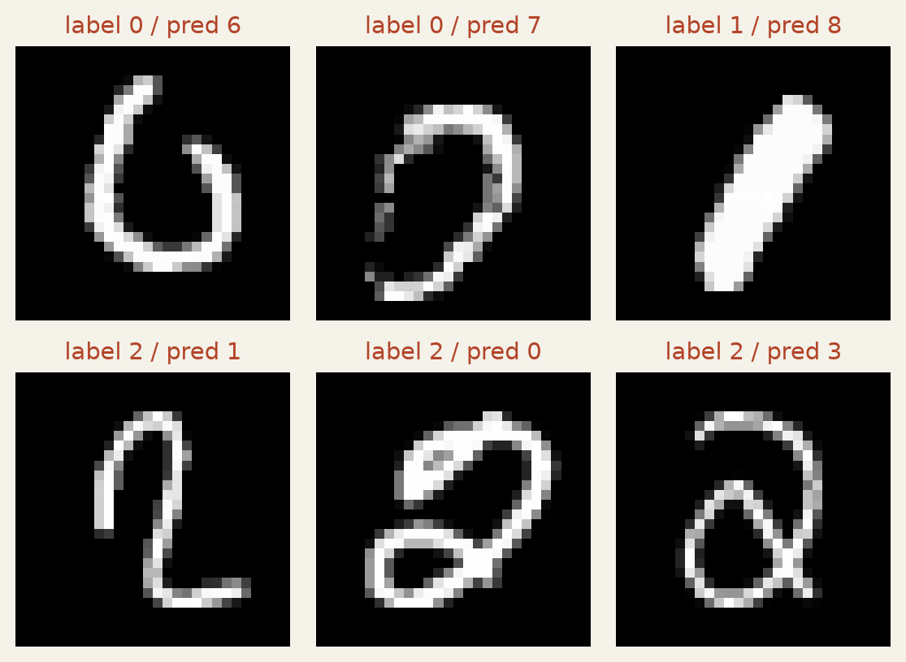
맞힌 비율을 넘어서, 어떤 변화에서 실패하는지 질문하면 다음 실험이 된다.
한 흐름으로 설명할 수 있으면 이름을 외우는 단계를 넘어선 것이다.
과제 분류는 라벨, 검출은 물체별상자, 분할은 픽셀 영역. 객체 인식이라는 말은 문맥을 확인한다.
직관과 계산 사람의 단서 관찰을 필터·특징 맵·계층의 비유로 연결하되 실제 연산과 구분한다.
MNIST 28×28 입력에서 10개 점수를 만들고 정답으로 가중치를 조정했다. 다음 주는 맞힌 근거를 시험한다.
출구 질문: 필터 반응은 숫자 확률인가? 출력 채널 수는 클래스 수인가? MNIST 분류기가 숫자 위치도 찾았나?
구조를 외우기보다, 저자의 질문과 근거를 따라가는 90분.
AlexNet
Alex Krizhevsky · Ilya Sutskever
Geoffrey E. Hinton
NeurIPS 2012
1주차의 필터·특징 맵·분류기를
실제 연구의 설계 선택으로 다시 읽습니다.
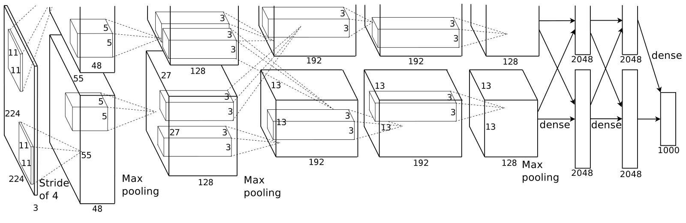
초록·서론 → 문제 정의 → 개념 → 수식 → 실험 → 결론 → 나의 정리
논문 목차를 그대로 낭독하지 않고, 이해에 필요한 질문 순서로 재배치합니다.
첫 번째 통과
무슨 문제를 왜 풀었는지 잡습니다.
두 번째 통과
방법을 개념으로 설명하고 수식으로 확인합니다.
세 번째 통과
실험이 주장을 지지하는 범위를 정리합니다.
모든 문장을 처음부터 완벽히 이해하려 하지 말고, 다음에 확인할 질문을 남깁니다.
“저자가 말했다”와 “실험에서 확인했다”와 “내가 추측했다”를 나눕니다.
저자가 무엇을 가능하게 했다고 말하는가?
예: 이 구조가 대규모 이미지 분류에 유효하다.
그 주장을 어디서 확인할 수 있는가?
기록: 절, 표·그림 번호, 데이터와 비교 조건.
지금 모르는 점은 무엇인가?
예: 층 수 때문인가, 학습 방식 때문인가?
모르는 단어만 모으는 대신, 주장과 근거 사이에 남는 질문을 적습니다.
무엇을 분류하고, 어떤 방법을 쓰며, 무엇을 아직 말하지 않았는가?
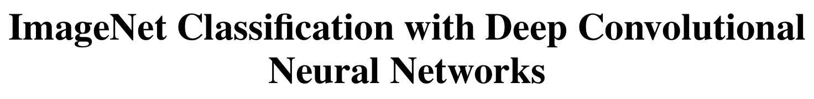
Abstract·§1 → §2·§3.5 → §3–5 → §6 → §7 Discussion
이 논문은 CNN을 처음 발명한 논문이 아닙니다. 제목만으로 기여를 단정하지 않습니다.
첫 문장의 “무엇을 했다”를 찾고, 방법·결과·조건으로 나눠 읽습니다.
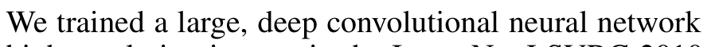
많은 종류의 자연 이미지를 분류한다.
깊은 CNN과 이를 학습시키는 선택들.
오류율을 보고하되, 연도·지표·모델 구성을 확인한다.
초록은 논문의 주장 지도입니다. 숫자의 정확한 조건은 본문에서 다시 확인합니다.
숫자를 잘 읽는 모델이 복잡한 자연 이미지도 잘 분류한다는 보장은 없습니다.
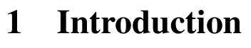
작은 흑백 입력, 비교적 정돈된 대상.
배경·조명·자세·크기·가림이 함께 달라짐.
독자의 질문 ①
이전 데이터와 방법은 어떤 변화를 충분히 다루지 못했을까?
독자의 질문 ②
예시를 많이 모으면, 모델 크기·계산량·과적합 문제는 어떻게 달라질까?
서론을 읽는 목적
새 기법 이름 전에, 저자가 중요하게 본 병목을 찾습니다.
배경 설명을 읽을 때는 “그래서 무엇이 부족한가?”를 한 문장으로 적습니다.
데이터·표현력·학습 가능성·일반화가 서로를 제한합니다.
관찰하지 못한 변화까지 완전히 알 수는 없다.
학습 데이터가 담는 범위를 확인한다.
여러 시각 단서를 조합할 모델이 필요하다.
깊이와 채널 수는 설계 변수다.
계산·메모리와 과적합을 함께 다뤄야 한다.
크게 만들기만 해서는 충분하지 않다.
“무엇이 필요하다”와 “이 논문이 그것을 어떻게 마련했다”를 연결합니다.
새 이름을 외우는 대신, 각 선택이 겨냥하는 문제를 붙여 봅니다.
| 읽을 문제 | 논문에서 확인할 선택 | 우리의 확인 질문 |
|---|---|---|
| 이미지의 규칙을 활용 | 합성곱과 계층 구조 | 공유되는 것과 달라지는 것은? |
| 큰 모델의 학습 비용 | ReLU · GPU 구현 | 속도 비교의 데이터와 지표는? |
| 훈련 예시를 과하게 기억 | 데이터 증강 · Dropout | 학습/평가 때 무엇이 다른가? |
| 정말 개선되었는가 | 벤치마크 · 구성 요소 비교 | 정확히 어느 조건이 바뀌었는가? |
한 가지 마법의 기법보다, 문제를 풀 수 있도록 구성한 시스템을 읽습니다.
두 문장이 나오면 초록·서론의 첫 읽기는 성공입니다.
“기존에는 ______ 때문에
______ 하기가 어려웠다.”
“이를 위해 ______가 필요하며,
이 논문은 ______를 제안·구성했다.”
문장에 ReLU·Dropout을 넣었다면, 그 이름이 어떤 문제를 해결하는지도 설명해 보세요.
설명하지 못한 빈칸은 실패가 아니라, 다음 절에서 확인할 질문입니다.
AlexNet에는 독립된 “Problem statement” 절이 없습니다. 정보를 모아 재구성합니다.
한 장의 RGB 이미지
→ 클래스별 점수·확률과 예측 라벨
훈련 예시의 정답 라벨에
높은 확률을 주도록 가중치를 학습
분리된 평가 데이터의 오류율
+ 실제 학습에 필요한 계산 조건
저자의 문장을 찾아서 입력·출력·목표·제약을 채우는 것이 문제 정의 분석입니다.
ImageNet 전체와 ILSVRC 대회 부분집합, 그리고 대회 연도를 구분합니다.
데이터 이름만 적으면 부족합니다.
어떤 버전인가? 몇 개 클래스를 쓰는가? 어떤 분할에서 평가하는가?
원문 §2를 확인합니다.
이 논문이 설명하는 대회 과제는 1,000개 범주입니다. 2010과2012 결과는 뒤에서 별도로 읽습니다.
| 기록할 칸 | 혼동을 막는 질문 |
|---|---|
| 데이터 버전 | 전체 ImageNet인가, 대회 부분집합인가? |
| 훈련 / 검증 / 시험 | 가중치 학습·설정 선택·최종 평가 중 무엇인가? |
| 추가 데이터 | 사전학습에 더 큰 데이터가 사용되었는가? |
| 평가 입력 | 한 이미지의 한 crop인가, 여러 crop인가? |
비교의 단위는 모델 이름 하나가 아니라, 모델·데이터·평가 절차의 묶음입니다.
정답이 첫 번째인가, 다섯 후보 안에 있는가?
| 순위 | 1 | 2 | 3 | 4 | 5 |
|---|---|---|---|---|---|
| 수업용 예측 | 개 | 고양이 | 여우 | 늑대 | 곰 |
Top-1: 틀림
Top-5: 맞음
Top-1: 틀림
Top-5: 틀림
틀린 이미지 수 ÷ 전체 이미지 수
낮을수록 좋음
Top-5 오류율 15.3%를 “정확도 15.3%” 또는 “Top-1 오류율”로 읽지 않습니다.
논문에 그대로 있는 인용문이 아니라, 지금까지 읽은 내용을 연결한 문장입니다.
이제부터 모든 기법을 이 문제의 어느 부분에 답하는지 연결해 읽습니다.
이 논문의 중심은 새로운 정리의 증명보다, 구조·학습 방식과 그 경험적 검증입니다.
가까운 픽셀의 관계에서
작은 시각 단서를 계산한다.
같은 단서를 다른 위치에서도
같은 규칙으로 계산한다.
단서의 반응을 다음 층에 전달해
더 넓은 관계를 조합한다.
작은 영역에서 획을 보고, 다른 위치에서도 같은 획을 찾고, 획들의 관계를 보는 과정. 단, CNN이 사람의 인지 과정을 그대로 복제했다는 뜻은 아닙니다.
원리 → 무엇을 계산하는지 → 왜 필요한지 → 근거의 순서로 설명합니다.
입력의 작은 영역과 가중치를 곱해 더하면, 한 위치의 반응값이 나옵니다.
질문을 담는 숫자
필터의 가중치가 어떤 대비·패턴에 크게 반응할지 정합니다.
질문을 옮기기
같은 필터를 이동해 얻는 반응의 지도가 특징 맵입니다.
학습
정답과의 오차를 이용해 필터 값도 바뀝니다.
학습 후 필터를 관찰하는 것과, 사람이 의미 있는 필터를 미리 넣는 것은 다릅니다.
하나의 필터는 연결된 입력 채널을 함께 보고, 하나의 출력 특징 맵을 만듭니다.
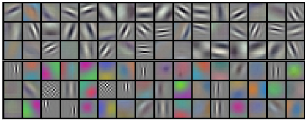
원문에서 관찰
색 대비와 방향성 같은 서로 다른 패턴이 보입니다.
넘겨짚지 않기
이 그림은 첫 층의 가중치입니다. 특정 입력의 특징 맵이나 “모델의 생각” 전체가 아닙니다.
필터·특징 맵·채널은 같은 말이 아닙니다. “무엇의 그림인가?”를 먼저 확인합니다.
위치마다 별도의 탐지기를 만들지 않는다는 구조적 가정입니다.
절약하는 것
공간 위치가 늘어도 같은 필터를 재사용합니다. 학습해야 할 규칙의 수를 줄입니다.
얻는 성질과 한계
단서를 다른 위치에서도 찾기 쉽지만, padding·stride·pooling·분류기 때문에 완전한 위치 불변성이 자동 보장되지는 않습니다.
적은 가중치와 같은 성능은 같은 말이 아닙니다. 구조의 가정이 과제에 맞는지 묻습니다.
다음 층의 입력은 원본 이미지가 아니라, 앞 층이 계산한 반응들입니다.
더 넓은 영역을 조합할 수 있다는 설명과, 실제 의미를 배웠다는 증거를 구분합니다.
먼저 전체 경로, 그다음 층의 역할, 마지막으로 연결과 크기를 확인합니다.
입력 → 합성곱 5개 → 완전연결 3개
두 GPU에 나눈 연결을 표현
ReLU · 정규화 · pooling 위치 확인
8개 “학습 가능한 층”이라는 표현을 모든 연산의 개수로 읽지 않습니다.
도식에서 읽은 관계를 자기 말로 설명하면, 숫자를 외우는 부담이 줄어듭니다.
| 층 묶음 | 확인할 설계 | 읽기 질문 |
|---|---|---|
| 합성곱 | 필터 크기·채널·stride·연결 | 어떤 범위의 어떤 입력을 함께 보는가? |
| pooling | 창 크기·이동 간격 | 무엇을 남기고 공간 정보를 얼마나 줄이는가? |
| 완전연결 | 입력을 모아 점수 생성 | 공간별 반응이 어떻게 클래스 점수가 되는가? |
이 재구성은 이해를 위한 요약입니다. 정확한 재현에는 원문과 구현의 세부 조건이 더 필요합니다.
양수는 통과시키고 음수는 0으로 만듭니다. 선형 연산만 쌓는 것과 달라집니다.
왜 비선형인가?
선형 변환만 연속 적용하면 전체도 하나의 선형 변환으로 합칠 수 있습니다.
학습의 관점
ReLU의 양수 구간은 입력이 커져도 포화되지 않습니다. 다만 음수 구간의 기울기는 0입니다.
논문에서 확인할 것
빠르다는 주장을 Figure 1의 축·범례·실험 조건으로 검토합니다.
ReLU가 모든 학습 문제를 해결한다는 말 대신, 어떤 조건에서 어떤 개선을 보였는지 읽습니다.
공간 크기를 줄이고, 작은 위치 변화에 덜 민감한 요약을 만들 수 있습니다.
max pooling
한 채널의 작은 영역에서 최댓값을 선택합니다. 필터를 새로 학습하는 연산은 아닙니다.
겹치는 창
창보다 이동 간격이 작으면 이웃 창이 같은 입력 일부를 봅니다.
잃는 것
정확한 위치와 일부 값이 사라집니다. 요약이 언제나 유리한 것은 아닙니다.
논문의 선택: 창 3 × 3, stride 2. 개념을 이해한 뒤 비교 대상과 출력 크기를 확인합니다.
주변 채널의 반응 크기를 이용해, 현재 반응의 규모를 조절하는 연산입니다.
여러 채널이 동시에 크게 반응할 때
각 반응의 크기를 조절한다.
배치 평균·분산을 사용하는
BatchNorm과 같은 연산이 아니다.
2012년 논문의 설계 선택으로 읽고,
모든 CNN의 필수 요소로 일반화하지 않는다.
수식의 복잡한 첨자를 보기 전에 “어떤 값을 무엇으로 나누는가?”를 이해합니다.
같은 대상을 다르게 보여 주어도 같은 정답을 요구하는 학습입니다.
원문: crop과 좌우 반전.
대상이 조금 옮겨져도 같은 분류를 요구한다.
원문: RGB 변동을 이용한 색 변화.
수식 전에 변화의 목적부터 이해한다.
잘린 이미지에도 정답 단서가 남는가?
뒤집기·회전 후에도 같은 라벨인가?
MNIST의 6을 크게 회전시켜 9처럼 만들면, “모든 변환이 라벨을 보존한다”는 가정이 깨집니다.
훈련 증강과 평가 때 여러 crop의 예측을 평균하는 절차를 따로 기록합니다.
학습 중 일부 활성값을 무작위로 0으로 만들어, 다른 조합에서도 유용한 표현을 요구합니다.
어디에 쓰는가?
이 논문에서는 앞의 두 완전연결 층에 사용합니다.
무엇이 바뀌는가?
같은 가중치를 공유하면서, 매번 일부 활성값을 가립니다. 뉴런을 영구 삭제하지 않습니다.
평가 때는?
모두 사용하되 크기 조절이 필요합니다. 원문의 평가 시 0.5 배율과 학습 때 보정하는 구현 관례를 구별합니다.
앙상블과 연결되는 직관은 유용하지만, 독립 모델 여러 개를 실제로 학습한 것과 같지는 않습니다.
이미 설명한 “작은 영역을 곱해 더하기”를, 여러 채널과 위치로 확장합니다.
수업용 일반식 · stride 1의 유효 위치 · 딥러닝 구현의 cross-correlation 표기. 원문에 이 식이 그대로 실린 것은 아닙니다.
| 기호 | 이미 아는 개념 | 읽는 질문 |
|---|---|---|
| c / o | 입력 / 출력 채널 | 무엇을 함께 보고 어떤 지도를 만드는가? |
| u, v / i, j | 창 안의 좌표 / 출력 위치 | 어디를 계산하고 어디에 기록하는가? |
| W / b | 학습하는 필터 / 편향 | 위치를 옮겨도 같은 값이 재사용되는가? |
식을 외우기 전에 입력·출력·합산 대상·학습 변수를 찾습니다.
클래스 점수를 확률로 바꾸고, 정답에 낮은 확률을 주면 더 큰 손실을 받습니다.
수업용 표기 · 한 예시의 cross entropy. 원문 §3.5의 정답 로그확률 최대화와 부호를 바꾼 동등한 목적.
−log(0.8) ≈ 0.223
−log(0.2) ≈ 1.609
손실로 가중치를 학습하지만,
보고 표는 Top-1·Top-5 오류율
확률을 출력한다는 것만으로 그 값이 잘 보정된 신뢰도라는 결론은 나오지 않습니다.
원문 수식을 보면서, 앞에서 이해한 연산이 어디에 적혀 있는지 찾습니다.
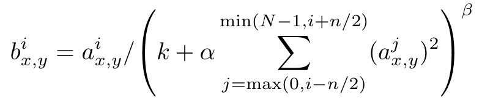
현재 위치·채널의
ReLU 이후 반응
같은 위치의
주변 채널 반응 제곱합
크기와 영향 범위를 조절하는
하이퍼파라미터
모든 첨자를 외우는 대신, “주변 반응이 커지면 현재 출력은 어떻게 되는가?”에 답합니다.
곡선을 보고 “더 좋다”라고 말하기 전에, 무엇을 측정했는지 확인합니다.
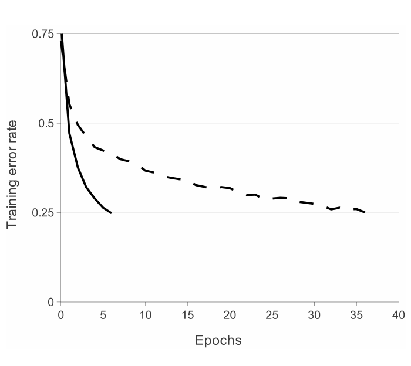
먼저 축과 범례
가로는 epoch, 세로는 훈련 오류율입니다. 실선 ReLU와 점선 tanh를 비교합니다.
그다음 실험 조건
이 그림은 CIFAR-10의 4층 CNN 비교입니다. ImageNet 최종 모델의 시험 정확도 곡선이 아닙니다.
마지막 주장 범위
목표 훈련 오류율에 도달하는 속도를 비교합니다. 모든 모델에서 일정 배율로 빨라진다고 확대하지 않습니다.
데이터 → 축 → 범례 → 비교 조건 → 결론 순서로 그래프를 읽습니다.
첫 번째 표는 2010 시험 집합입니다. 지표를 고정한 뒤 차이를 계산합니다.
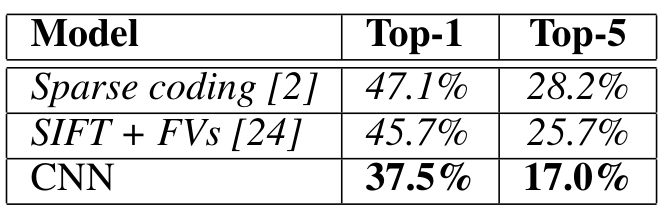
읽는 순서
데이터·분할 → 열의 지표 → 비교 행 → 수치 차이.
Top-5 비교 예
25.7% → 17.0%: 오류율이 8.7%p 낮아졌습니다.
해석의 한계
전체 방법의 성능 비교입니다. ReLU 하나만의 효과를 이 표에서 분리할 수는 없습니다.
같은 표의 개선을 읽되, 그 표가 분리하지 않은 원인까지 단정하지 않습니다.
같은 CNN이라는 이름 아래, 모델 수·추가 데이터·분할이 다릅니다.
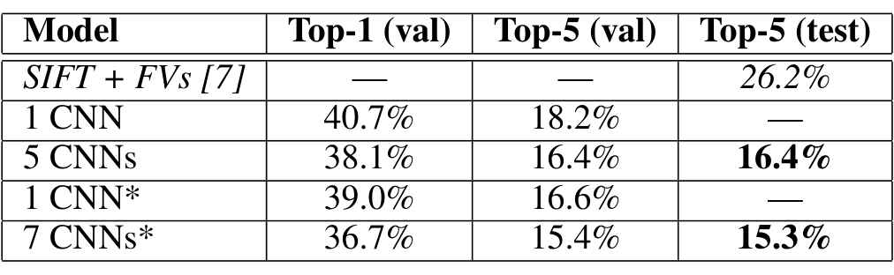
18.2%는 Top-5 검증 오류율.
시험 값은 빈칸입니다.
15.3%는 Top-5 시험 오류율.
여러 모델의 예측을 결합합니다.
추가 ImageNet 사전학습 모델 포함.
이 행의 모든 모델이 같은 조건은 아닙니다.
“AlexNet 단일 모델의 시험 오류율은 15.3%”라는 문장은 이 표를 정확히 설명하지 못합니다.
다음 세 문장을 “가능 / 수정 필요 / 근거 부족”으로 분류하세요.
“Table 2의 7 CNNs*는
Top-5 시험 오류율 15.3%를 보였다.”
“모델 1개를 7개로 늘린 효과만으로
오류율이 18.2%에서 15.3%로 줄었다.”
“이 결과는 어떤 새 이미지 분포에서도
동일한 성능을 보장한다.”
A는 조건을 포함한 기술입니다. B는 분할·사전학습·모델 구성이 함께 달라 원인 분리가 안 됩니다. C는 평가 범위를 넘어선 주장입니다.
실험 표는 강한 근거이지만, 그 안에 없는 비교까지 대신해 주지는 않습니다.
전체 모델 간 비교와, 한 선택의 효과를 분리하는 비교는 목적이 다릅니다.
| 원문에서 찾을 비교 | 확인할 교란 요인 | 우리가 남길 질문 |
|---|---|---|
| ReLU / tanh (§3.1) | 별도로 선택한 학습률 | 최종 오류와 학습 속도 중 무엇을 말하나? |
| 2 GPU / 1 GPU (§3.2) | 커널 수·연결도 함께 다름 | GPU 개수만 바꾼 실험인가? |
| 겹침 / 비겹침 pooling (§3.4) | 창 크기, 같은 출력 크기 | 어떤 설정을 고정했는가? |
| 중간 conv 층 제거 (§7) | 깊이·계산·표현이 함께 변함 | 깊이가 늘수록 항상 좋다는 증거인가? |
논문이 보고한 관찰을 인정하면서, 인과적으로 말할 수 있는 범위를 따로 적습니다.
실제 예측 예시를 보되, 몇 장의 사례를 전체 데이터의 통계로 바꾸지 않습니다.
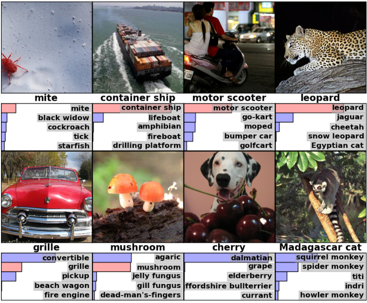
무엇이 표시되었나?
시험 이미지, 상위 후보, 정답 라벨과 그에 해당하는 막대를 확인합니다.
무엇을 질문할까?
대상이 여러 개면 무엇을 분류해야 할까? 비슷한 범주끼리 헷갈리는가?
무엇은 알 수 없나?
선택된 예시만으로 오류의 빈도나 모든 실패 유형을 추정하기는 어렵습니다.
정성 분석은 질문을 풍부하게 하고, 정량 평가는 그 질문의 빈도와 크기를 확인합니다.
픽셀의 닮음과, 학습된 표현 공간에서의 닮음은 다를 수 있습니다.
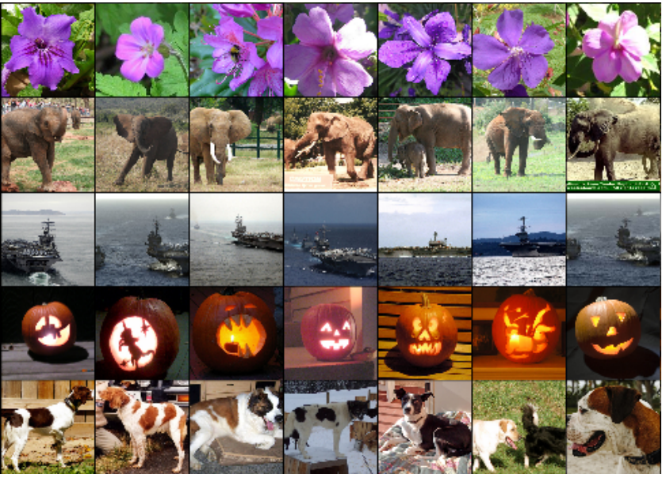
첫 열과 나머지 열
시험 이미지에 대해 마지막 은닉층 표현이 가까운 훈련 이미지를 찾습니다.
관찰할 것
자세나 배경이 달라도 비슷한 대상이 모이는지 봅니다.
주장의 경계
이웃 이미지가 그럴듯하다는 사실은 사람과 같은 의미 이해나 배경 무시를 증명하지 않습니다.
시각화는 표현을 조사하는 도구입니다. 모델이 왜 판단했는지 완전히 설명하는 증명은 아닙니다.
AlexNet의 마지막 본문 절은 Conclusion이 아니라 §7 Discussion입니다.
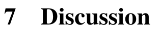
이 설정의 큰 CNN을 지도학습으로 학습해
해당 분류 과제에서 강한 결과를 얻었다.
특정 데이터·학습·평가 조건의 결과다.
깊이의 유용성이 무한한 깊이의 보장은 아니다.
더 큰 모델·데이터·계산,
영상의 시간 정보 등 후속 질문이 남는다.
초록에서 만든 주장 목록에 돌아가, 확인한 것과 남은 것을 표시합니다.
사용한 용어의 수보다, 근거와 미해결 질문이 얼마나 선명한지가 중요합니다.
이 논문을 한 문장으로 설명한다.
주장의 적용 범위를 함께 적는다.
결과에 중요하다고 본 선택 2–3개.
각각 근거 위치를 붙인다.
단어 대신 질문으로 적는다.
어떤 정보가 있으면 풀리는가?
다음에 읽을 개념·논문·실험.
구체적인 첫 행동을 정한다.
이 네 칸이 채워지면, 완벽히 이해하지 못했어도 다음 읽기를 시작할 수 있습니다.
화면의 빈칸을 공책이나 별도 읽기 기록지에 옮겨 적으세요.
이 논문은 ______라는 조건에서 ______를 보여 주었다.
내가 고른 요소: ______ / 근거: §___, Figure·Table ___
나는 ______가 왜/어떻게 ______인지 아직 모르겠다.
다음에는 ______를 읽거나 ______를 비교해 보겠다.
2분 개인 작성 + 1분 짝에게 핵심 주장과 아직 남은 질문 설명.
정답지가 아니라, 근거를 붙이고 모르는 점을 구체화하는 예입니다.
큰 CNN의 가능성을 구조·학습·평가를 묶어 보여 주었다.
근거: §1, §6, §7
공유·계층 구조, 학습 가능성, 과적합 억제.
근거: Figure 2, §§3–5
224 입력과 도식의 55 크기는 어떤 padding으로 맞출까?
다음 확인: 원문·원 구현의 차이
깊이를 늘릴 때 최적화가 어려워지는 이유.
다음 읽기: ResNet의 문제 정의와 비교 실험
계산이 안 맞으면 몰래 숫자를 고치지 말고, 원문·도식·구현의 차이를 질문으로 남깁니다.
개념을 이해하고, 수식으로 확인하고, 실험이 지지하는 범위까지 말하기.
Alex Krizhevsky, Ilya Sutskever, Geoffrey E. Hinton (2012)
ImageNet Classification with Deep Convolutional Neural Networks
Advances in Neural Information Processing Systems 25
원문 캡처: Figures 1–4, Tables 1–2, §3.3 수식, 제목·짧은 구절. 한국어 설명·개념도·활동은 수업용 재구성입니다. 전체 캡처 출처와 좌표: assets/alexnet/provenance.json
출구 질문: AlexNet의 주장 하나와 근거 하나, 아직 모르는 질문 하나를 말할 수 있나요?
← → 키로 페이지 이동 · 모바일에서는 위아래로 읽기 · PDF는 A4 가로형
설명용 위젯은 모델을 학습하거나 실제 분류 성능을 측정하지 않습니다.